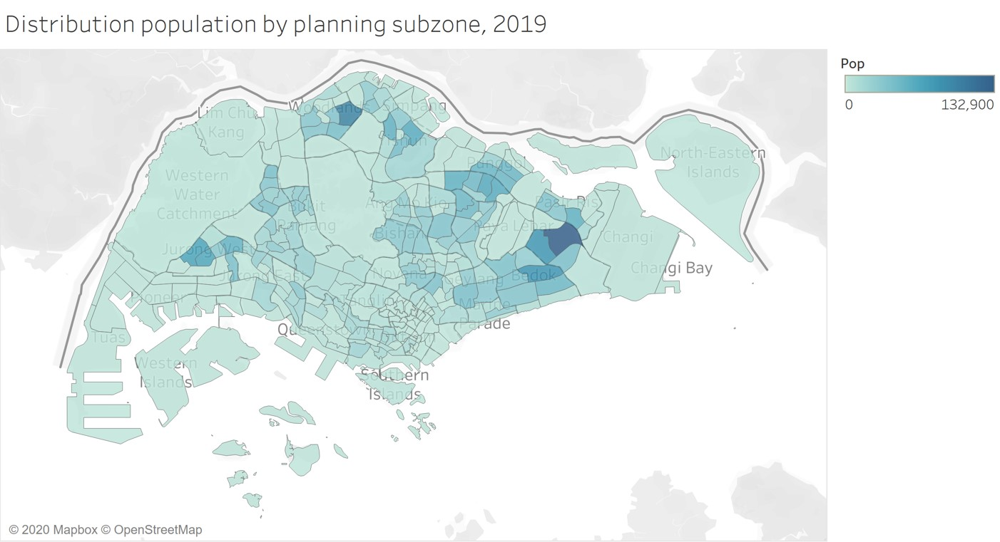
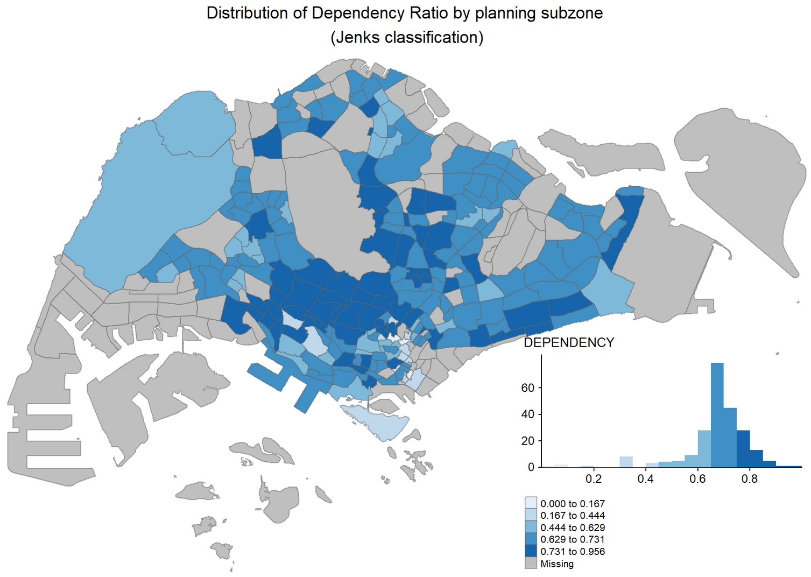

Topographic maps are detailed, accurate graphic representations of features that appear on the Earth’s surface.
Contour lines are one of the important feature on a topographical map.
Other important features are geographic graticule and a coordinate grid. They allow map readers to determine relative and absolute positions of mapped features.
A map legend (or key) lists the features shown on that map, and their corresponding symbols.
Traditionally present in paper printed format.
Reference map – Topography Map
Figure on this slide shows the close-up view of a topographical map.
Show the physical and cultural landscapes of the earth surface.
Different colours and symbols are used to represent real world features.
Labels are used to indicate locations and places.
Thematic Mapping
Qualitative Thematic Map
Quantitative Thematic Map
Visual Variables and Cartographic Symbols - Nominal or ordinal scales
Nominal visual variables are best for emphasizing differences in kind, or qualitative differences.
The four visual variables that work best for showing nominal differences are: colour hue, shape, arrangement and orientation.
Figure on the right shows four nominal visual variables used each in point, linear and areal symbols. Colour hue such as red blue and green may be used to categorise features that are qualitative different such as a river and a road.
Qualitative Thematic Map
Point symbol Map
Line Symbol Map
Qualitative Thematic Map: Areas or Polygons
Qualitative Map: Multivariate Map
Visual Variables and Cartographic Symbols - Ratio scale
Quantitative visual variables are most effective for depicting differences in amount, or quantitative differences.
The visual variables that do a good job of showing ordinal differences are: colour value, colour saturation, size and texture/grain.
Colour value or lightness of hue may be used to represent quantitatively different data (either rank-ordered data or numerical amounts) such as population density.
Value is typically light for low numbers (e.g., light green) and dark for high numbers (e.g., dark green).
Colour saturation or intensity of hue such as bright red compared with a dull, gray red can be used for quantitative data.
Quantitative Thematic Map: Dot Density Map
A dot-density map is a type of thematic map that uses dots or other symbols on the map to show the values of one or more numeric data fields. Each dot on a dot-density map represents some amount of data.
Quantitative Thematic Map: Proportional Symbol Map
The proportional symbol technique uses symbols of different sizes to represent data associated with different areas or locations within the map. For example, the proportional map below use circle with different sizes to represent millions of people.
How to size circles incorrectly and correctly?
Figure below explains how attribute values are map on circles. One strategy to overcome this problem is to use square instead of circle.
Quantitative Thematic Map: Proportional Symbol Map
Instead of using circle, square symbol shall be used.
How to make proportional symbol maps clearer?
When designing a proportional symbol map, one of the important consideration is to avoid the circles blocking each other. One possible strategy to overcome this problem is to applying opacity (also known as transparency).
Proportional Symbol Map: Pie Chart Map
Proportional pie chart map places pie bar chart on a map based on the location of the observations. The map below uses circle size to depict total sales in each city, and the pie slices then depict proportion of the three shipping modes, namely: delivery truck, express air and regular air.
Proportional Symbol Map: Bar Chart Map
Proportional side-by-side bar map places side-by-side bar chart on a map based on the location of the observations.
Classified choropleth map
A classed choropleth map combines areal units into a smaller number of groups. Interval levels may vary, but typically 4 to 7 are used in a map. There is different classification techniques used to divide up the intervals.
Unclassified choropleth map
An unclassified choropleth map is similar to a classed choropleth map; however, an unclassed choropleth maps do not have an averaged statistic towards each particular colour.

Choropleth mapping technique - Number of classes
The readability of a choropleth map will be affected by the number of classes used.
When a small number of classes is used, the spatial distribution reveals will be very limited.
When an appropriate number of classes is used, the spatial distribution reveals will be clear.
Choropleth mapping technique - Number of classes
Figure below provided a mathematical method to determine number of classes used for preparing a choropleth map.
Choropleth map - Methods of choosing classes
Based on the nature of the distribution
quantile, equal interval, natural breaks, standard deviations, defined interval
Arbitrary
Can be based on round numbers. Examples: Grouping according to age or census housing categories.
Can result in empty categories
Data classification method: Equal interval
Divides the range of attribute values into equally sized classes.
Data classification method: Quantitle
Same number of features per class.
Data classification method: Jenks (also known as Natural breaks)
Default Jenk’s statistical optimization by finds natural groupings in the data.

Data classification method: Standard deviation
A measure of dispersion. Use if the distribution approximates a normal distribution.
Choropleth map - Colour scheme
ColorBrewer is an online tool designed to help people select good color schemes for maps and other graphics.
Colour Scheme Tip
Avoiding multiple colours in choropleth mapping
Stick with a single hue (or a small set of closely related hues) and vary intensity from pale colours for low values to increasingly darker and brighter colours for high values.
Quantitative Thematic Map - Bivariate
Symbolising features based on more than one attribute